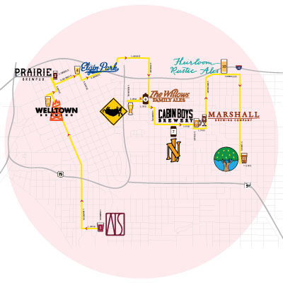

Brewmasters
Tulsa’s beer scene is booming

Valerie Grant
A decade ago, Marshall Brewing Company was the lonely pioneer of Tulsa’s brewing scene. In 2012, Prairie Artisan Ales came along with the boom of a Prairie Bomb. American Solera launched a little under two years ago, beginning the bubbling up of the brew scene. Since then, nine—count ‘em, nine!—more breweries have opened in the Tulsa area, rapidly expanding T-town’s selection to include everything from weiss to kolsch, stout to quad, pale ale to tripel. Brewers across town are putting their creative twists on their products—brewing with guava, making all-Oklahoma-ingredient beers, aging beer in wine barrels and atop cantaloupes, and more. In this section you’ll find stories celebrating several successes in the beer-brewing community (many have already been covered; check thetulsavoice.com) and a map to help you lay out your beer-drinking plans. Cheers!
Hop Around
Eleven breweries. Ales, sours, saisons. Six-point-one miles. Get yourself a designated driver and hit up these spots for these brews.
1. American Solera SOBO | 108 E. 18th St.
Ryemera — Sour rye ale, 4% ABV —Brewed with rye bread from Chimera, this beer is, like, so local
Somebody Loves You in Copenhagen — Sour ale, 6% ABV — Re-fermented on cherries and aged in Danish cherry wine barrels
2. Welltown Brewing | 114 W. Archer St.
Porch Party Pilsner — American lager, 4.2% ABV — Light, refreshing, citrusy|
Beer Bath Saison — Dry-hopped saison, 7.8% ABV — Fruity, peppery, complex
3. Prairie Brewpub | 223 N. Main St.
Leisure Decathalon — Session IPA, 4% ABV — Bitter, bright, clean
Vape Tricks — Sour fruit beer, 5.6% ABV — Robust, aromatic, cherry character
4. Elgin Park | 325 E. M.B. Brady St.
Put Me in Kolsch — Kolsch, 4% ABV — Bright, refreshing, subtle fruity finish
Willie Mays Haze — New England-style session, 4% ABV — Tropical, cloudy, mango-pineapple
5. Dead Armadillo | 1004 E. 4th St.
Amber — American amber ale, 6.3% ABV — Bold, subtly sweet, dry with a bitter finish
Low & Outside — Pale ale, 4% ABV — Light color and body, bold flavor and aroma
6. Willows Family Ales | 418 S. Peoria Ave.
Larry and the Hendersons — Dark saison, 7% ABV — Earthy, grassy, peppery, looks—but doesn’t taste—dark
Family Ale — American sour ale, 6% ABV — Tart farmhouse style, citrusy, juicy, light
7. Nothing’s Left Brewing Co. | 1502 E. 6th St.
Galaxy Pale Ale — Pale ale, 5.5% ABV — Crisp malts, tropical and floral hops
Strawberry Blonde — Wheat beer, 6.5% ABV — Sweet, tart, brewed with strawberries
8. Cabin Boys Brewery | 1717 E. 7th St.
Cast-A-Line Kolsch — Kolsch, 4.8% ABV — Crisp, lemongrass, pear
Huntman IPA — IPA, 6.2% ABV — Mango, hoppy, white wine, pineapple
9. Marshall Brewing Company | 618 S. Wheeling Ave.
Arrowhead Pale Ale — Pale ale, 5.2% ABV — Light, citrus, easy drinking
This Land Lager — Lager, 4.8% ABV — Refreshing, clean, short and simple finish
10. Heirloom Rustic Ales | 2113 E. Admiral Blvd.
Honorable Mention — Wild guava ale, 5.7% ABV — Champagne mangos dipped in champagne
High Violet — Hibiscus table beer, 4.0% ABV — Hibiscus flowers, black pepper, grapefruit
11. Renaissance Brewing Co. | 1147 S. Lewis Ave.
Renaissance Gold — German-style golden ale, 5.5% ABV — Light hops, pilsner malt, a beer for “all occasions”
Indian Wheat — Southern German Hefeweizen, 4.8% ABV — Pepper, banana, floral, clove
Access our brewery tour Google Map at thetulsavoice.com/tulsabrews. Or, you could just book a tour with Pearl Brewery Tours (see below).
Bonus Round: Make a trip to Broken Arrow Brewing Co. the next day when you need a hair (or a few) of the dog.
Broken Arrow Brewing Co. | 333 W. Dallas St.
Clear Creek — Saison, 7.5% ABV — Light with hints of spice and a dry finish
Mount Saint Melons — Kettle sour, 6% ABV — Light, fruity, aged with fresh cantaloupe
 Pearl Brewery Tours
Pearl Brewery Tours
Unsure of being your own tour guide? You don’t have to traverse the Tulsa area alone. Pearl Brewery Tours will take you around town to local breweries.
Touring breweries with people you don’t know can be a lot of fun, said Tyler Palmer, owner and operator of PBT.
“I like to think making friends with a group of strangers part of the tour makes the experience more exciting,” Palmer said. “Whoever is on the bus, by that last stop, they’re exchanging numbers. It’s rare that they get on the bus as strangers and leave as strangers.”
Thaddeus Penrod, who was on PBT’s inaugural tour, agrees.
“It reminded me of those days at summer camp where everyone is just talking with each other on the bus,” said Penrod. “You all feel connected with the same goal in mind: To have a nice, enjoyable time.”
On each tour, PBT takes guests to four of the 10 Tulsa watering holes listed on page 20—yes, even out to Broken Arrow Brewing Co.
The tour bus has 14 spots, so you can fill it up with your friends or join a tour with others.
Tours last three hours on Friday ($45 tickets) and four hours on Saturdays and Sundays. There are two types of tickets to buy: The Brews Cruise ($56) and The DD Ticket ($30). If you book that designated driver ticket, PBT has a special token of appreciation for you—you’ll just have to go to see what it is. Book at pearlbrewerytours.com. —Blayklee Buchanan
 Flight of beers
Flight of beers
Wild Brew celebrates its 20th anniversary
During the winter months, it’s not unusual to see bald eagles soaring across the Tulsa skyline or to see their hulking six-foot tall nests atop trees lining the Arkansas River. Just over a decade ago, these regal creatures were removed from the endangered species list—and beer played a role in the reversal of their fate.
The George Miksch Sutton Avian Research Center, located near Bartlesville, has been at the forefront of bird conservation and research since 1983. During those early years, the Sutton Center focused on revitalizing the bald eagle population through breeding captive pairs, rearing the eaglets, and then releasing the eagles to wild habitats. Today’s populations are thriving.
“When you see a bald eagle or a breeding pair in this state, you can trace their genetics back to the Sutton Center’s efforts,” said Audra Fogle, director of development at the Sutton Center. “We are having a direct impact on putting wildlife back in the wild, and we are one of only a handful of organizations that are captive-raising birds with the intention of releasing them.”
Central to funding this mission is Wild Brew, Sutton’s largest yearly fundraiser, which also shares the title of Tulsa’s first craft beer festival. The event has raised nearly $1 million for the organization during its 20-year run. And as the state’s budget woes continue to affect Sutton’s funding, the money raised during Wild Brew has become even more vital to the protection of wildlife.
“Obtaining funding for conservation in this part of the country can be a challenge, which makes Wild Brew more vital to our mission and day-to-day operations,” Fogle said. “With this year’s fundraiser, we are hoping to bring back our live bird educational program, because when a child or adult has the opportunity to see a bald eagle up close, it can be transformational.”
This year’s Wild Brew is set to be one of the biggest yet, featuring 50 breweries that will bring their most popular and special edition batches for guests to sample. Most of the breweries for the 2018 festival are
in-state.
“Originally, the majority of breweries were out of state. But starting about three years ago, we’ve seen a shift with more and more Oklahoma breweries,” said Coleman Miller, co-chair of Wild Brew. “A lot of the newer breweries were not fully online last year, so we look forward to having even more local beers this year in a variety of styles.”
Many newcomers—like Cabin Boys Brewery, Heirloom Rustic Ales, and Rapture Brewing—will participate in Wild Brew for the first time this year. Pioneers like Marshall Brewing Company are intertwined with the event’s identity.
“With Wild Brew celebrating its 20th year, it is neat to see some of the breweries that got their start with Wild Brew having anniversaries as well. Marshall is having their tenth and Dead Armadillo is celebrating their fifth. So, this year is pretty special to all of us,” Miller said.
In addition to all the beers, there will be tasty food from 40 of the area’s best restaurants. General admission tickets are $65, while patron level tickets that include early entry into the event and access VIP areas are $165. The event is Aug. 25 at the Cox Convention Center. To purchase tickets or for more information about the event, visit wildbrew.org. —Angela Evans
 Weird new neighbors
Weird new neighbors
The Willows Family (Ales) has moved to the Pearl District
There is always that strange house in every neighborhood. No one is certain where the family came from or what they do. Vehicles are constantly circulating through the driveway at unpredictable times of the day. People enter and exit house with awkward, toothy grins.
One such peculiar family—The Willows Family Ales—just moved into the Pearl District.
The Willows is the brainchild of Heath Glover, a pharmaceutical-rep-turned-brewer whose foray into beer making began similar to many. An avid beer fan, Glover attended every beer festival and event he could find. As one of the top-10 sales reps for Warner Chilcott, he was no stranger to shooting the breeze, and it wasn’t long before he became acquainted with Chase Healey, founder of Prairie Artisan Ales and American Solera. They bonded, and Glover began helping Healey work festivals and events.
In November 2013, their relationship became essential. Warner Chilcott was sold, leaving Glover unemployed. Determined not to let temporary idleness become permanent, he called upon Healey and asked if he could volunteer at Healey’s brewery.
Glover’s goal was to get back into pharmaceutical sales, not launch his own brewery. Healey offered him a job multiple times, all of which Glover declined.
Eventually, he wanted to brew his own beer on a larger scale. At a beer event in Arkansas, Willows was born. The friends worked out a deal where Glover would continue to work for Healey in exchange for personal access to the brewing equipment. The only expense Glover had to cover was any hard costs, like grain. The arrangement worked out well for several years, and eventually Glover purchased his own 30-barrel fermentation tank. At the time, production of Willows was in high demand despite the low supply.
That took a turn in 2016 when Healey sold Prairie Artisan Ales to Oklahoma-based Krebs Brewing Company. Glover was on the verge of having his beer brewed and bottled in Wisconsin when some friends gave him a lead on available space in the Pearl District.
“I saw a spot that could be intimate,” Glover said.
Since its opening on Memorial Day weekend, the brand new Willows Family taproom has been a hit. The snug interior features bar, tabletop, and pew seating, which, contrary to the neighborhood rumors, did not come from the adjacent church. Accents of knitted blankets, hoary light fixtures, and soup bean art—the kind you would find in grandma’s house—adorn every nook.
The taproom and brewery share common space. Glover claims the free hourly tours are like no other.
“We joke about me standing behind the bar and saying ‘Turn around. There is the brewery.’”
Having customers right in front of him is a new experience for Glover, but the interaction is akin to being in medical sales. While the brewery requires more time than a typical side hustle, he currently takes no salary from the brewery and is working as a medical sales rep again so he can pour money back into the establishment.
The inspiration behind the beers has always been to create something unique—something weird, even.
That uniqueness is especially expressed on the beer labels and branding that feature artist Joe Cappa’s iconic family portraits. The people have somewhat grotesque faces, but all feature the same mouth with numerous tiny teeth. Glover describes it as representing the “the genesis of Willows.”
Stories from Cappa’s old neighbors inspired the tale of the Willows Family, the brewery’s namesake. He said the name comes from an eccentric family that lived in his house on Willow Lane in Norman.
“We all have weird friends and family,” Glover said. “The Willows are kind of weird, but they are ambiguous enough that they can remind you of someone else.” This idea parallels his brewing style—weird, yet
familiar.
The brewery’s familial aesthetic is completed by the backyard—a half-acre featuring patio seating and an assortment of lawn games against the backdrop of Tulsa’s skyline. Glover also has plans to install a sand volleyball court.
As a small family unit, Willows is still analyzing what works well in the neighborhood. The beer selection will always be changing with no scheduled rotation. Customers can expect to see crowlers and growlers within a few weeks, which is good since there are no current plans for bottling or external distribution.
“It’s a nice creative outlet,” Glover said. “Beer brewing in general and the taproom allows me to be me. We want to turn everything on its head and get you thinking about beer.” —Andrew Saliga
The Willows Family Ales
3–9 p.m., Wed.–Fri.; 11a.m.–9 p.m., Sat.
418 S. Peoria Ave. | willowsfamily.com
Canned with a plan
Nothing’s Left Brewing Co. to open new taproom the Pearl district
Travis Richards, brewer and owner of Nothing’s Left Brewing Co., laughed as he explained how their name evolved from a joke about the difficulty coming up with a unique brewery name into a comment on how fast their beer disappears.
“It’s really kind of bloomed into its own thing,” he said.
Nothing’s Left started in 2014 when Richards was invited to serve some of his homebrew at an event sponsored by BA Buzz in Broken Arrow. Thirsty attendees gulped down 15 gallons of beer, which received rave reviews. In no time, Richards filed for his own LLC.
“We became a thing in the span of a month.”
About three months after becoming official, Nothing’s Left had a canning and kegging contract with Anthem Brewing in Oklahoma City and was soon found in liquor stores and on draft across the state.
Today, Nothing’s Left offers their two flagship beers, Galaxy Pale Ale and Strawberry Blonde Ale, as well as seasonal beers.
Using highly prized Galaxy hops, Galaxy Pale Ale’s flavor suggests hints of guava paste candy and fresh-squeezed orange juice, dissolving into a rich malt core. The Galaxy essence combined with a low IBU rating is a sweet spot for the beer drinker whose palate rejects the hopped-out bite of the conventional IPA.
Their second flagship beer tastes how it sounds. The strawberry’s pronounced flavor is rich and refreshing. Satisfying, presenting as a tantalizingly semi-sweet carbonated malty strawberry shortcake, accompanied by a strong, fruity aroma, it’s not a wispy and absent La Croix posing as a strawberry ale.
Richards, who by day works in construction, is busy getting ready his new storefront—a remodeled Texaco station in the Pearl District (1502 E. 6th St.), which he plans to open in mid-July or early August. He’ll use the exposed brick taproom as proving grounds for future beers before sending them to Anthem for canning and larger-scale production. It’s a spot to innovate and refine traditional brewing ideas.
Future offerings include hit recipes, such as their Watermelon Gose and their honeydew and cantaloupe-flavored Honey, Do Me. Also, new creations like an IPA that tastes like a dreamsicle, a barrel-aged Belgian quad, and a chocolate milk stout are on the horizon for the taproom.
“We don’t really go and take a classic style and try to brew it like that. We put our own spin on everything we do,” said Richards. —Brady Whisenhunt
Let there be flights
Broken Arrow’s first craft brewery prepares for takeoff
When I met brewers Austin Ferguson and Jason Northern at their newly-built Broken Arrow Brewing Co. taproom (333 W. Dallas St., Broken Arrow), they were hard at work.
“This morning we cut up 350 pounds of cantaloupe,” said Ferguson.
On that evening, Ferguson and Northern, electrical and mechanical engineers by background, respectively, were preparing to test the effect of aging one of their favorite creations, the Mt. St. Melons kettle sour, in burgundy wine barrels.
The unaged version of this brew is wild and surprising, flavored with copious amounts of fresh cantaloupe. The earthy, unmistakably seductive mojo of ripened muskmelon transitions into a bright, acidic zing. This two-stage flavor story, with its dynamic mouthfeel and fresh fruitiness, could easily be served in a champagne flute and swapped out for a brunch mimosa.
Ferguson and Northern began innovating four years and 26 recipes ago. Today they call themselves “co-head-brewers” because their brewing process is, as they call it, a “hive mind” approach.
Broken Arrow Brewing Co. opened June 17 as the town’s first craft brewery. Its historic building was built in 1906, and was once home to another pioneer: Broken Arrow Ice Plant and Light & Power Company, BA’s first power station.
Converting the building from a landmark into a modern taproom took a prodigious amount of work, performed mostly by Ferguson and Northern. Situated in the Rose District near the farmers market, the brewery will serve a number of beers brewed in-house.
One of these gems, the Clear Creek Saison is a 7.5% ABV homage to the classic Saison Dupont. Its mildly sweet, nutty finish is heralded by a refreshing, crisp, buttery, wild bubblegum imprint that resounds on the palate.
Also on tap will be the Broken Arrow Brown, an 8.2% ABV American strong ale, and the Rose District New England IPA.
Future ventures involve Porter peaches, Stillwell strawberries, and other Oklahoma ingredients. For take-home sales, they’ll soon offer “pounders,” 16-ounce cans that transform into drinking glasses via their pull-top lids.
With successful soft-openings in the rearview, the excitement in the brewery about the upcoming grand opening was palpable and electric.
“This is all so wild. People ask if it’s getting old yet, and I’m like, ‘Are you kidding me?’” Austin laughed. “I’m over here pinching myself!” —Brady Whisenhunt
.jpg)
.jpg)